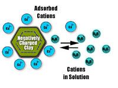
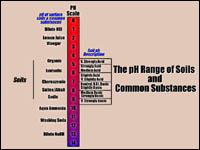

|
|
|
| Soil chemistry studies the chemical characteristics of soil
which depends on their mineral composition, organic matter and environment.
Chemical reactions occur when substances either combine or break apart to form new substances with identifying properties that are different from the original substances. The reactions require energy of some kind (either a gain or loss). New substances may be formed when bonds between atoms or ions are formed, broken or when atoms are rearranged. Ions are atoms which are positively or negatively charged by either losing or gaining electrons. Ions with different charges have an attractive force for each other, while similarly charged ions repel one another. One example of a chemical reaction is hydrogen uniting with oxygen to form water. An understanding of soil chemistry is important in soil formation and fertility. How rocks and minerals breakdown and transform into new compounds is essential to our understanding of weathering and erosion. How mineral nutrients are transformed and bound in soil leads to better fertilization and soil testing techniques. Important chemical properties which affect the productivity of Saskatchewan soils are: |
|||
 An example of chemical properties in soils is the way in which positively and negatively charged particles (ions) within the soil react to one another. The colloidal mineral and organic matter particles in soils usually have a net negative change. Clays have more charge or cation exchange capacity than sands. Many natural soil nutrients and those from applied fertilizers have positive ions (cations) (e.g K+, Ca2+, Mg2+). These nutrients are attracted to, and held by, the soil particles so balancing the charge. This is important to soil fertility as some nutrients remain available in the soil and are not leached readily. Eventually, in humid regions, basic cations on the surface such as Ca2+ are gradually replaced by acidic cations such as H3O+, Al(OH)2+ and Al(OH)+ | |||
 Soil pH pH is a measure of the hydrogen ion activity within the soil. Soils range from acidic (low pH or high free hydrogen ions) to alkaline or basic (high pH). A pH scale ranges from strongly acidic (pH of 0) to strongly basic (pH of 14). Each numerical increase on the scale is an actual jump in pH value 10-fold. Most soils are within a pH range from 4.5 (considered strongly acidic for soils) to 8.5 (medium alkaline). The best growth for the greatest variety of plants takes place within a 6.0 to 7.0 pH range (slightly acidic to neutral). Some plants thrive in an alkaline environment while other prefer more acidic soils. While the pH of soils may have some direct effects on plants themselves, it is the interaction of soil pH and plant nutrients that is important. Soils which are higher in acidity or alkalinity levels can result in deficiencies or excesses (that may be toxic) of certain kinds of elements. For instance, higher alkalinity can make elements such as iron, manganese and zinc less soluble and therefore less available for plant absorption. Deficiencies of these elements can cause poor growth and poor plant health. Higher acidity can result in a higher percentage of certain substances that are absorbed in solution by plants. The pH of a soil can affect the activities of microorganisms, which then affects the level of nitrogen, phosphorus and sulphur in the soil. As with plants, most organisms prefer a near-neutral range. Outside this range, the numbers of microorganisms and the rates of their biochemical activities decrease. This affects certain nutrient levels as bacteria and other life forms are involved in decomposition and cycling of matter. Plant producers may use soil pH to help determine soil nutrients that may be lacking and the appropriate way to help the problem. Acidification
In many areas of the province, soils have experienced an increase in acidity. Acidification may be the result of the following:
| |||

Driving along the Trans-Canada Highway near Swift Current is an experience. In the middle of summer, it appears that the land is covered by snow. The 'snow' is actually an accumulation of soluble salts at the soil surface. These salts are deposited when the water which had carried them evaporates. Saline areas can develop from upward capillary movements of water, groundwater seepage, internal drainage, and water tables being close to the surface. In all cases, salts that are naturally found int he ground are brought to the surface as dissolved substances in water. As the water evaporates, the salts are left behind, thereby increasing the salinity of the soil. Higher salt levels negatively affect plants and soil organisms. At a cellular level, a higher concentration of salt outside cells means that there is a lower concentration of water outside the cells. This can interfere with water intake. The process of osmosis is water moving from an area of higher water concentration to an area of lower concentrations through a membrane. In non-saline soils, water usually moves from the soil into the cells. If a salty soil has about the same or lower water concentration than living cells, water may leave the cells. The result of water leaving the cells is a plant which wilts and eventually dies, from lack of water intake. Salts may enter the cells and can interfere with the intake of needed nutrients by the cells or have toxic effects on the cells. Small soil organisms are similarly affected by high salt concentrations in the soil. Salts also affect the structure of soils by causing soil clumps to break down more quickly. This leads to soil layers becoming more dense, restricting air and water movements and making conditions less favourable for plant roots and microorganisms. The term alkali is often used in referring to saline areas. While the term is not necessarily incorrect, alkali is just one form of salinity. There are different kinds of salts in soils; the more common ones being calcium and magnesium. Sodium is another salt found in soils and, if concentrated in the upper soil, the accumulation is called alkalinization. Alkali soil behave like clayey soils; they are sticky when wet, usually crusty on the surface and when dry, becomes hard. |